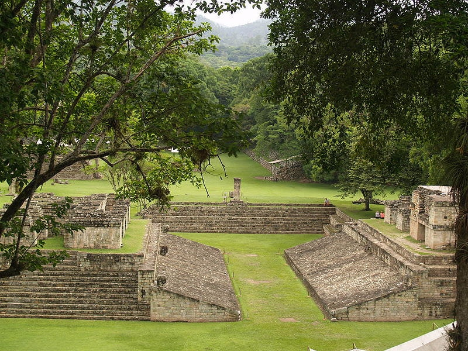
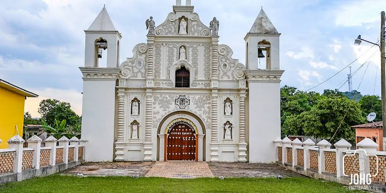
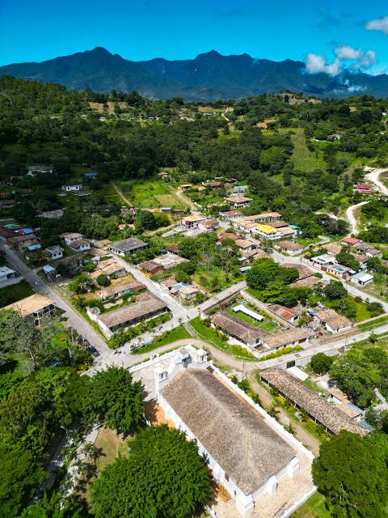
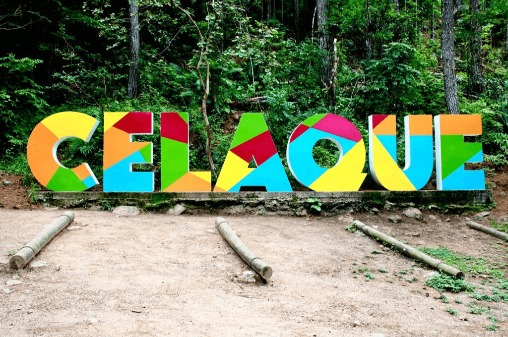
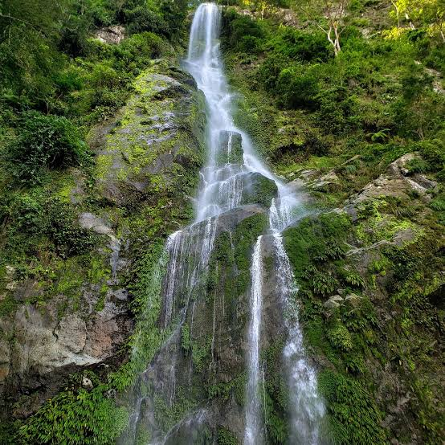
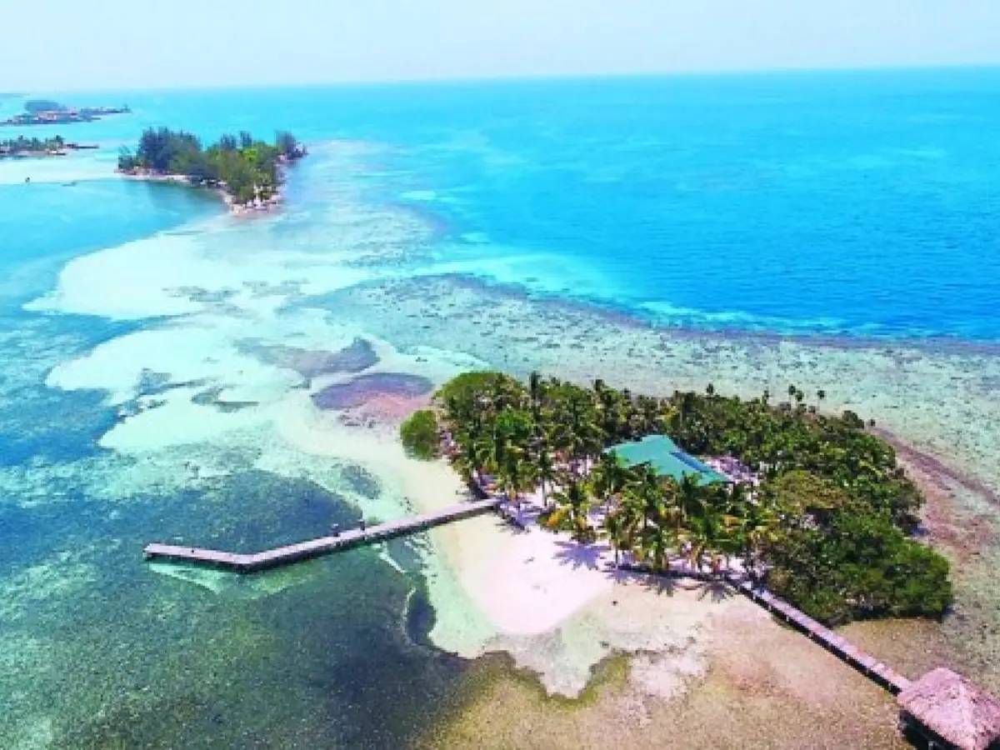

Descubre las rutas turísticas de Honduras
Honduras cuenta con sitios arqueológicos, pueblos llenos de historia, montañas, bosques y playas caribeñas. Explora estas rutas y encuentra tu próxima aventura.
1. Ruta Maya y Arqueológica

Copán Ruinas, Copán
Un importante centro de la antigua civilización maya, reconocido por sus esculturas, templos y la famosa Escalinata Jeroglífica.
Atractivos: Gran Plaza, Acrópolis, Escalinata Jeroglífica y museo de escultura maya.
Dificultad: Baja a moderada. Se camina por senderos y áreas arqueológicas.

Parque Arqueológico El Puente, La Jigua
Sitio arqueológico ubicado en el departamento de Copán, con estructuras antiguas y un museo que ayuda a conocer la historia de la región.
Atractivos: Ruinas mayas, museo arqueológico y entorno natural.
Dificultad: Baja. Se recomienda llevar zapatos cómodos.
2. Ruta Lenca y Pueblos con Encanto

Gracias, Lempira
Una ciudad histórica del occidente hondureño, conocida por su arquitectura colonial y su relación con la cultura Lenca.
Atractivos: Centro histórico, iglesias antiguas, Fuerte San Cristóbal y cercanía al Parque Nacional Celaque.
Dificultad: Baja en el centro histórico; algunas visitas a zonas naturales requieren más esfuerzo.

La Campa, Lempira
Un pueblo de tradición Lenca, conocido por su alfarería, sus paisajes montañosos y sus actividades de aventura.
Atractivos: Artesanía de barro, paisajes rurales y canopy.
Dificultad: Baja para recorrer el pueblo; moderada o alta para algunas actividades de aventura.
3. Ruta de Ecoturismo y Bosques Nublados

Parque Nacional Celaque, Lempira
Área natural montañosa que protege bosques nublados y alberga el Cerro Las Minas, el punto más alto de Honduras.
Atractivos: Senderismo, bosques, riachuelos y observación de naturaleza.
Dificultad: Moderada a alta, según el sendero. Llegar a la cima requiere buena condición física y planificación.

Parque Nacional Pico Bonito, Atlántida
Un parque de montañas cubiertas de bosque tropical cerca de La Ceiba, con ríos, cascadas y gran diversidad de especies.
Atractivos: Senderos naturales, observación de aves, ríos y actividades de aventura en áreas habilitadas.
Dificultad: Baja a alta, dependiendo de la ruta y la actividad elegida.
4. Ruta Caribeña y Arrecifes

Roatán, Islas de la Bahía
Isla caribeña famosa por sus playas, aguas transparentes y arrecifes de coral que forman parte del Sistema Arrecifal Mesoamericano.
Atractivos: West Bay, West End, buceo, snorkel y paseos en barco.
Dificultad: Baja para las playas; moderada para actividades acuáticas que requieren preparación.

Utila, Islas de la Bahía
Una isla conocida por el buceo, la vida marina y el ambiente tranquilo de sus comunidades costeras.
Atractivos: Snorkel, buceo, playas y excursiones para observar la vida marina de forma responsable.
Dificultad: Baja para recorrer la comunidad; depende de la actividad en el mar.
Consejos para viajar
- Planifica los traslados y revisa el estado de las carreteras antes de salir.
- Para senderos de montaña, lleva agua, calzado adecuado y considera contratar un guía local.
- En las islas, respeta los arrecifes y no toques ni extraigas corales o animales marinos.
- Los tiempos de viaje dependen del clima, el tráfico y el estado de la carretera.